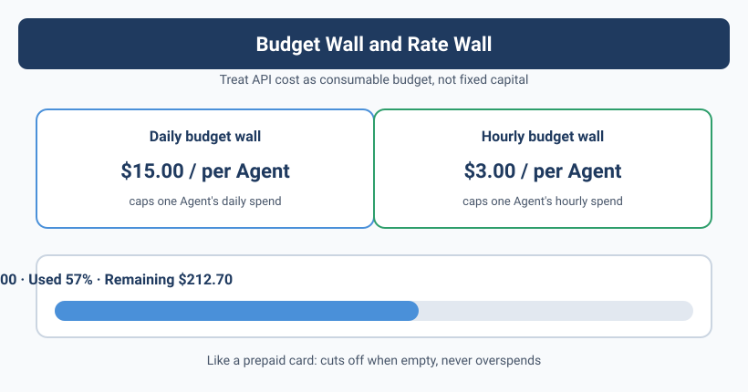

Cost Control — Don't Let Your API Bill Explode
![Image is a cost monitoring dashboard titled "Don't Let Your API Bill Explode". It includes four sections: the Today's consumption section shows token usage for inference models, fast models, and Embedding, with today's cost at $12.45; the 7-day trend section lists daily costs from Monday to Friday; the month-to-date cumulative cost is $287.30; the budget control section shows a monthly budget of $500, with $287.30 used (57%), and $212.70 remaining; the alerts and optimization section notes token usage is normal, the inference model share is high, and remaining budget is reasonable. This image relates to Yason's concern about API billing costs discussed in the document.](../assets/diagrams/en_13_1.svg)
The Morning of the $847 Bill
When Yason opened his API provider's console and saw last month's bill, his coffee nearly shot onto the screen.
$847.32.
He remembered the month before was $412, and the month before that was $380. It had doubled.
Yason started digging through the itemized charges. As he scanned line by line, one big-ticket item caught his eye:
qclaw-agent:
API calls: 28,432
Total tokens: 14,217,000
Cost: $312.44
Wait. qclaw is just an API-routing Agent — its job is to forward requests to the right model. It shouldn't need to call a heavy model; it only needs to make a routing decision.
But the bill showed it had called the heavy model 28,432 times.
Yason checked the logs and found the cause of the explosion: qclaw's model-routing config was wrong, so every request got sent to a paid model. Worse, that misconfiguration triggered an infinite loop — qclaw's routing failed → auto-retry → kept failing → kept retrying. It burned through $312 in four hours.
One misconfiguration + one infinite loop = half a month of API budget. An Agent's "blind execution" trait is a huge cost hazard — it will never say "this request looks expensive, do you want to confirm?"
Breaking Down Token Costs: Where the Money Goes
After the qclaw incident, Yason sat down and did a full cost audit. He broke token consumption down by Agent and task type:
Kai (dev) — avg $310/month
├─ Code generation (DeepSeek V4 Pro): 42% — $130.20
├─ Code review (DeepSeek V4 Flash): 25% — $77.50
├─ Architecture discussion (Claude Opus): 20% — $62.00
└─ Tech research (Kimi): 13% — $40.30
Rex (ops) — avg $85/month
├─ Log analysis (DeepSeek V4 Flash): 50% — $42.50
├─ Alert handling (GPT-4o mini): 30% — $25.50
└─ Config generation (DeepSeek V4 Flash): 20% — $17.00
Max (ops/content) — avg $210/month
├─ Content creation (Claude Sonnet): 45% — $94.50
├─ Data analysis (DeepSeek V4 Flash): 30% — $63.00
└─ Research reports (Kimi): 25% — $52.50
Infrastructure (routing, memory sync, monitoring) — avg $102/month
Other (testing, trial-and-error, retries) — avg $140/month
(Note: the table below is the normal monthly cost baseline after removing the qclaw infinite-loop incident — that $312.44 was a one-time anomalous spend and is not counted in the monthly averages below.)
That "Other" line made him stop for a long time — $140 spent, but zero output. All trial-and-error, retries, and infinite loops.
Non-productive consumption is the biggest hidden cost of an Agent team. It usually runs 15–25% of your spend — if you don't audit your costs, you won't even know it's bleeding you dry.
Model Routing: Which Model for Which Job
Yason's first cost-optimization move was configuring model routing — not every task deserves the strongest model.
# /opt/agents/config/model-routing.yaml
models:
# Main model — best price/performance
default:
provider: deepseek
model: deepseek-v4-flash
cost_per_1k_tokens: 0.00015
# Heavy reasoning — architecture design, complex bug analysis
heavy_reasoning:
provider: deepseek
model: deepseek-v4-pro
cost_per_1k_tokens: 0.002
triggers:
- task_type: architecture_design
- task_type: complex_debug
- error_count: "> 3" # auto-upgrade after the simple model fails 3 times
# Long context — document analysis, codebase scans
long_context:
provider: kimi
model: kimi-k1.6
cost_per_1k_tokens: 0.001
triggers:
- input_length: "> 8000" # exceeds 8000 tokens
# Fast tasks — simple Q&A, formatting, translation
fast_cheap:
provider: openai
model: gpt-4o-mini
cost_per_1k_tokens: 0.000075
triggers:
- task_type: translation
- task_type: formatting
- task_type: simple_qa
# Local model — sensitive data, offline tasks
local:
provider: ollama
model: qwen2.5:7b
cost: 0 # free
triggers:
- data_sensitivity: high
The core logic of this routing config fits in one sentence: use a cheap model for simple tasks, a good model for complex ones, and run locally whatever you can instead of calling a remote endpoint.
A month after rolling out the config, Kai's monthly cost dropped from $310 to $180 — a 42% reduction — but Kai himself didn't notice a thing, because the routing switch was transparent.
Budget Alerts and Automatic Circuit Breaking
Routing optimization alone wasn't enough; Yason also needed a fuse — something that cuts the power automatically when costs go abnormal.
#!/bin/bash
# /opt/agents/monitor/scripts/cost-fuse.sh
# Check API consumption, trip the fuse when over limit
THRESHOLD_DAILY=40 # global daily cap $40
THRESHOLD_AGENT_DAILY=15 # per-Agent daily cap $15
LOG="/var/log/cost-fuse.log"
echo "=== $(date) cost check ===" >> "$LOG"
# Get current consumption (via the API provider's billing interface)
daily_cost=$(curl -s "https://api.provider.com/v1/billing/daily?key=$API_KEY" | jq '.total_cost')
kai_cost=$(curl -s "https://api.provider.com/v1/billing/daily?key=$API_KEY&agent=kai" | jq '.cost')
max_cost=$(curl -s "https://api.provider.com/v1/billing/daily?key=$API_KEY&agent=max" | jq '.cost')
rex_cost=$(curl -s "https://api.provider.com/v1/billing/daily?key=$API_KEY&agent=rex" | jq '.cost')
echo " Total: \$$daily_cost" >> "$LOG"
echo " Kai: \$$kai_cost, Max: \$$max_cost, Rex: \$$rex_cost" >> "$LOG"
# Circuit-breaker rules
if (( $(echo "$daily_cost > $THRESHOLD_DAILY" | bc -l) )); then
echo "⚠️ CRITICAL: daily total exceeded \$$THRESHOLD_DAILY, triggering global fuse!" >> "$LOG"
/opt/agents/emergency-shutdown.sh "daily_cost_exceeded"
feishu send "🚨 Global fuse tripped! Today's API spend \$$daily_cost exceeded cap \$$THRESHOLD_DAILY" \
--target yason --priority critical --phone
exit 1
fi
# Per-Agent over-limit
for agent in kai rex max; do
name="${agent%%_*}"
cost_var="${agent}_cost"
cost="${!cost_var}"
if (( $(echo "$cost > $THRESHOLD_AGENT_DAILY" | bc -l) )); then
echo "⚠️ HIGH: $name daily spend \$$cost, pausing this Agent" >> "$LOG"
/opt/agents/pause-agent.sh "$name" "cost_exceeded"
feishu send "🚨 $name paused: today's spend \$$cost exceeded cap \$$THRESHOLD_AGENT_DAILY" \
--target yason --priority high
fi
done
After this script went live, Yason finally felt at ease. He put it in vivid terms: "Before, my API bill was like a credit card with no limit. Now it's like a prepaid card — once it's empty, it stops, no overage."
Practical Token Optimization Tips
Beyond model routing and automatic circuit breaking, Yason collected 7 token-optimization tips:
1. Cache repeated requests The same prompt gets called in multiple scenarios (e.g., "introduce this project"). Yason built a simple in-memory cache that returns the cached result directly for identical requests. This alone saved about 30% of I/O consumption.
2. Search memory before asking the model
Before an Agent hits the model with every problem, it should first search the knowledge/ and skills/ directories. Yason's stats showed: 45% of questions already had answers in existing Skill files.
3. Cap the context window Agents have a tendency to "shove every relevant file into context." Yason added a rule to the System Prompt: never load more than 6000 tokens of context at a time. If more info is needed, load it in batches sorted by relevance.
4. Token audit per step When a complex task runs step by step, log token consumption after each step. If any step's consumption is abnormal (e.g., over 2x the budget), pause the task and report.
5. Pre-filter with a local model Before calling the heavy model, run a coarse filter with a local model (Ollama). For example, when Max does web analysis, the local model first judges whether a page is relevant, and only relevant pages get sent to the remote model.
6. Set a trial-and-error ceiling Every Agent has a hard rule in its System Prompt: "After 3 consecutive failures on the same task, stop and output a failure report." Yason found that infinite-loop trial-and-error accounted for 60% of non-productive consumption.
7. Auto-summarize costs in a weekly report Every Monday morning, Yason gets a Feishu card:
━━━━ Team Cost Weekly ━━━━
Last week total: $187.32
WoW: +12% (prior week: $167.10)
Budget remaining: 62%
Role ranking:
🥇 Kai: $82.10 (43.8%)
🥈 Max: $61.20 (32.7%)
🥉 Rex: $24.02 (12.8%)
Anomalous spend:
- 6/14 Kai continuous retries $8.40 (flagged)
- 6/16 Max model-routing mismatch $4.20 (fixed)
━━━━━━━━━━━
(Note: the "Budget remaining: 62%" in the weekly report is based on the weekly budget base, while the dashboard's "43% remaining" is on a monthly basis — different bases, so the two figures don't conflict.)
Yason doesn't have to tally it himself — the cost report is generated automatically.
Community Cost-Optimization Tools
Once Yason's cost-control system was working, he realized the community already had mature open-source solutions for what he'd built:
- OpenRouter (openrouter.ai): a unified model-routing gateway. All model calls are relayed through OpenRouter, which auto-routes to the provider with the lowest current load / best price. Yason's hand-tuned routing strategy comes out of the box with OpenRouter, and it switches automatically based on real-time pricing.
- LiteLLM (litellm.vercel.app): an open-source multi-provider SDK. Switch providers in one line of code — from OpenAI to DeepSeek to Anthropic — with no business-code changes. LiteLLM also has built-in cost tracking and rate-limit management.
- Portkey (portkey.ai): an AI gateway and cost-management platform supporting caching, retries, rate limiting, and budget control. The free tier tracks up to 1 million tokens per month.
- Helicone: an open-source LLM cost-monitoring tool. Yason's hand-written cost-fuse script? Helicone ships with similar functionality out of the box, plus a visual dashboard.
Yason later plugged LiteLLM into his own routing system: "Before, every provider needed its own API key and billing rules configured. With LiteLLM, the config went from 200 lines to 20."
Budget Walls and Rate-Limit Management
There's one easily overlooked dimension to cost control — rate limiting.
Yason ran into this more than once: an Agent would suddenly stop, not because of cost overage, but because the API provider returned 429 (Too Many Requests). The Agent doesn't understand the semantics of 429, so it keeps retrying — and ends up triggering even harsher rate-limit penalties.
The fix was a two-layer defense of "budget wall + rate wall":
# /opt/agents/config/budget-and-rate.yaml
budget_walls:
agent_level:
kai:
daily_budget: 15.00
hourly_budget: 3.00
rate_limit: 60 rpm # max 60 requests per minute
rex:
daily_budget: 5.00
rate_limit: 30 rpm
task_level:
heavy_reasoning:
max_cost_per_task: 2.00
max_steps: 20
simple_qa:
max_cost_per_task: 0.05
rate_management:
backoff_strategy: exponential # exponential backoff
max_retries: 3
retry_on_codes: [429, 503, 502] # only retry on these status codes
circuit_breaker:
error_threshold: 5 # 5 consecutive errors
recovery_time: 60 # pause 60 seconds
(Note: THRESHOLD_AGENT_DAILY=15 in the fuse script is the uniform "$15/Agent/day" hard cap; Rex's daily_budget: 5 in the budget-wall YAML is a tighter personal cap set just for Rex, which trips before the $15 cap.)
"The budget wall stops you from spending past your limit; the rate wall stops you from getting your account banned by the API provider. Between those two walls, the Agents are free to roam."
APIs Are Consumables, Not Assets
Yason wrote one line in the team Wiki:
Treat API fees as a "consumables budget," not "fixed-asset investment." Spending a few thousand a month in token fees isn't painful — spending it in the wrong direction is. Set your rules, wire up the fuse, do your audits, then let the Agents run free with the rest.
That was the most important lesson he learned after paying $847 in tuition.
Chapter Summary
- One infinite loop burned $312 in half a day — an Agent's "blind execution" is a cost black hole
- Do regular cost audits; break down each Agent's consumption by task type
- Model routing: cheap model for simple tasks, run locally whatever you can instead of calling remote
- Automatic fuse script: pause on overage without waiting for a human to notice
- 7 token-optimization tips: cache, search before asking, cap the window, per-step audit, local pre-filter, failure ceiling, auto-report
- API fees are consumables — spend them in the right direction and you won't wince
Next chapter preview: Who guarantees the quality of what an AI team produces? Once you stop reviewing every line of code yourself, you need an automated quality-assurance system — and Kai's refactoring accident is what taught Yason that lesson.
This article is from the column 'Being the Boss of AI', with the full series continuously updating: GitHub - VokoForge/ai-prism
